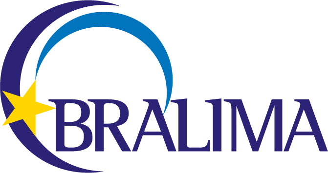

Bralima Brewery
Bralima Brewery는 콩고 민주 공화국 킨샤사에 본사를 둔 맥주·청량음료 제조회사이다. 1923년 Brasserie de Léopoldville로 설립되어 중앙아프리카의 오래된 대표 산업 기업 중 하나로 꼽힌다.
최종 업데이트

Bralima Brewery는 어떤 브랜드인가
Bralima Brewery의 정식 명칭은 Brasseries, Limonaderies et Malteries이며 줄여서 Bralima라 부른다. 콩고 민주 공화국 킨샤사 바루무비의 Avenue du Drapeau에 본사를 둔 주식회사 형태의 양조 및 청량음료 기업이다.
맥주, 청량음료, 병입 생수, 얼음 블록 등 다양한 음료의 생산과 판매를 주된 사업으로 한다. 킨샤사, 부카부, 키산가니, 보마, 음반다카, 루붐바시에 여섯 개의 양조장을 운영하며 대표 제품은 라거 Primus이다.
콩고 민주 공화국에서 공식 부문의 대형 고용주로 꼽히며, 주요 경쟁사는 Bracongo이다.
Bralima Brewery는 어떻게 시작되고 성장했나
1923년 10월 23일 레오폴드빌(현 킨샤사)에서 Brasserie de Léopoldville이라는 이름으로 설립되었다. 벨기에령 콩고의 벨기에 식민 지배자들이 경제 발전과 투자를 촉진하려는 목적으로 현지 양조업을 세웠고, Société Congolaise de Banque의 재정 지원을 받았다.
설립 직후 Brasserie, Limonaderie et Malterie로 이름을 바꾸었고, 1926년 12월 26일 첫 맥주 Primus를 내놓았다. 제2차 세계대전 이후 분권형 구조를 도입해 1950년 부카부를 시작으로 여러 지점을 세웠으며, 1973년에는 현대화 사업을 시작했다.
Bralima Brewery의 브랜드 아이덴티티는 무엇인가
1923년 설립되어 Primus 라거를 앞세운 중앙아프리카의 대표 양조·음료 기업이며, 오랫동안 Heineken 계열이었다가 ELNA Holdings Ltd로 운영이 넘어갔다.
Bralima Brewery의 대표 제품과 서비스는 무엇인가
대표 제품은 1926년에 처음 출시된 라거 Primus이다. 사업은 맥주, 청량음료, 병입 생수, 얼음 블록의 생산과 판매로 구성된다.
생산 거점은 킨샤사, 부카부, 키산가니, 보마, 음반다카, 루붐바시의 여섯 개 양조장이다. 1973년에는 Steinecker 스테인리스강 양조설비를 설치했고, 1986년 확장으로 발효 탱크 열두 기와 여과 시스템, 멸균수 처리 설비, 시간당 24,000병을 처리하는 라벨링 설비를 갖추었다.
Bralima Brewery는 지금 어떤 상태인가
1986년부터 Heineken N.V.가 최대 주주이자 전략적 모기업이었으나, 2026년 4월 10일 모리셔스 기반의 ELNA Holdings Ltd에 지분을 매각했고 ELNA Holdings Ltd가 운영을 넘겨받았다. 이에 앞선 2025년 11월 19일에는 Heineken N.V.가 부카부 양조장을 €1에 모리셔스 기반의 Synergy Ventures Holdings Ltd에 매각했다.
콩고 민주 공화국에서 공식 부문의 대형 고용주 중 하나이다.
자주 묻는 질문
Bralima Brewery는 언제 설립되었나요?
Bralima Brewery는 1923년 설립되었습니다.
Bralima Brewery는 어떤 산업의 브랜드인가요?
Bralima Brewery는 식음료 분야의 브랜드입니다.
Bralima Brewery의 브랜드 아이덴티티는 무엇인가요?
1923년 설립되어 Primus 라거를 앞세운 중앙아프리카의 대표 양조·음료 기업이며, 오랫동안 Heineken 계열이었다가 ELNA Holdings Ltd로 운영이 넘어갔다.
Bralima Brewery의 대표 제품은 무엇인가요?
대표 제품은 1926년에 처음 출시된 라거 Primus이다.
Bralima Brewery는 어느 기업이 소유하고 있나요?
1986년부터 Heineken N.V.가 최대 주주이자 전략적 모기업이었으나, 2026년 4월 10일 모리셔스 기반의 ELNA Holdings Ltd에 지분을 매각했고 ELNA Holdings Ltd가 운영을 넘겨받았다.
Bralima Brewery의 본사는 어디에 있나요?
Bralima Brewery의 본사는 킨샤사에 있습니다(위키데이터 기준).
Bralima Brewery의 공식 웹사이트는 어디인가요?
Bralima Brewery의 공식 웹사이트는 http://www.bralima.net/ 입니다.
출처와 검증
Bralima Brewery 관련 참고: 공식 웹사이트 · 위키데이터 Q2923625 · 영어 위키백과. 브랜드명은 한글과 원어를 함께 표기하되 데이터에 없는 표기는 만들지 않습니다. 기원 국가·설립연도는 검수된 정의문에서 확인된 값을 우선하고, 없을 때만 공식 웹사이트 URL이 일치하는 위키데이터 개체의 값을 씁니다. 위키데이터 값은 2026-11-10 기준입니다.